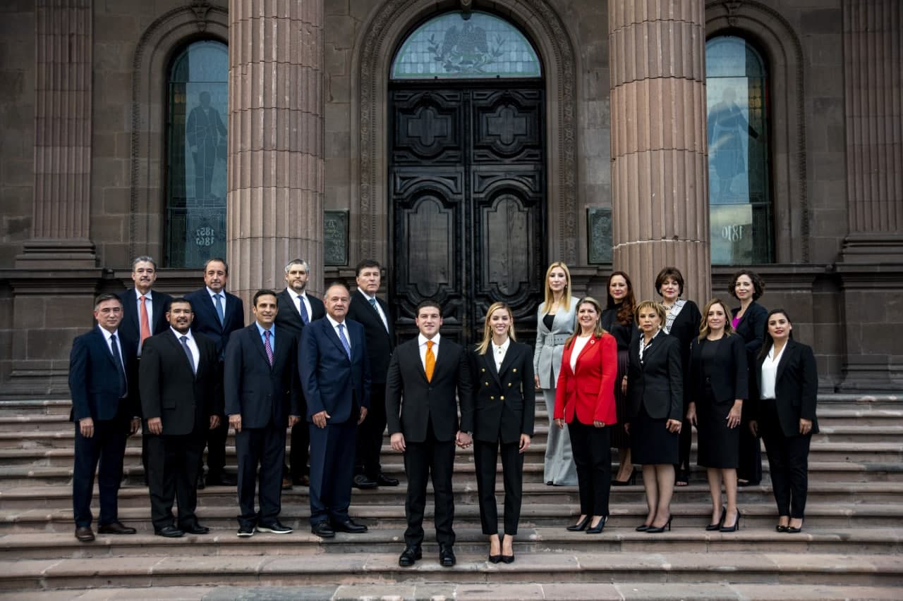
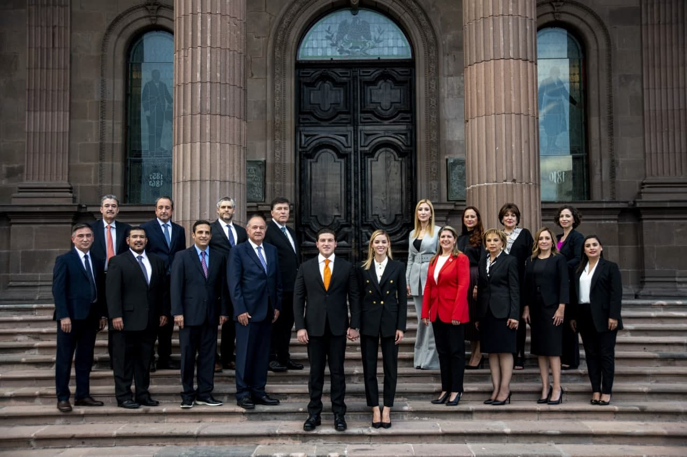

Gobierno de Nuevo Leon
Samuel Garcia SepulvedaGobernador de Nuevo León
Nació en Monterrey, estudió la licenciatura en Derecho y Finanzas, después una maestría en Derecho Público, ambas en el Instituto Tecnológico y de Estudios Superiores de Monterrey (ITESM). Estudió un doctorado en Política Pública y Administración Pública en la entonces Escuela de Graduados en Administración Pública y Política Pública (EGAP) del Tecnológico de Monterrey, y cursó otro doctorado en Derecho Fiscal en la Universidad ITAC. Actualmente finalizó su tercer doctorado en Derecho Constitucional y Gobernabilidad, en la Universidad Autónoma de Nuevo León (UANL).
Es fundador de tres bufetes jurídicos, fue Diputado local por el Distrito 18 de 2015 a 2018, y Senador por Nuevo León desde 2018.
Además, es autor de 3 libros, ha sido conferencista y escritor en diversos medios de comunicación, así como profesor en Maestría de Derecho Fiscal de la UANL.
El gabinete de Buen Gobierno, lo encabeza el abogado Javier Navarro Velasco, a cargo de la Secretaría General de Gobierno; María Teresa Herrera Tello, será la Contralora, fue la primera presidenta del Tribunal del Poder Judicial del estado; Carlos Garza Ibarra se mantiene en la Secretaría de Finanzas y Tesorería; Aldo Fasci Zuazua, continúa como Secretario de Seguridad Pública; Gloria Morales será la titular de la Secretaría de Administración y Ximena Peredo Rodríguez, estará a cargo de la Secretaría de Participación Ciudadana.
En el bloque de Generación de Riqueza Sostenible participarán: Iván Rivas Rodríguez, en la Secretaría de Economía, quien fue director de Coparmex Nuevo León; Federico Rojas Veloquio, como titular de la Secretaría del Trabajo; Hernán Villarreal Rodríguez, estará a cargo de la Secretaría de Movilidad y Planeación, quien estará a cargo de los grandes proyectos del sexenio; Marco Antonio González Valdez, en la Secretaría del Campo y Desarrollo Regional; Maricarmen Martínez Villarreal será titular de la Secretaría de Turismo y Alfonso Martínez Muñoz, titular de la Secretaría de Medio Ambiente.
El grupo de Igualdad, lo encabeza Martha Herrera González, como Secretaria de Igualdad e Inclusión, quien fue directora de Negocios Responsables Globales de Cemex; Sofía Leticia Morales, será titular en la Secretaría de Educación; al frente de la Secretaría de Salud, estará Alma Marroquín Escamilla; en la nueva Secretaría de la Mujer estará Alicia Leal Puerta y en la Secretaría de Cultura la titular será Melisa Segura Guerrero.
El gobernador electo explicó que su esposa, Mariana Rodríguez encabezará la oficina Amar a Nuevo León, donde atenderá temas que se les debe dar visibilidad, ya que durante la campaña a la gubernatura pudo constatar la pobreza en el sur del estado, los embarazos en adolescentes, la violencia obstétrica, “en total son 10 temas enunciativos, más no limitativos”, destacó.
 
¿Quienes conforman al gabinete de Samuel Garcia?

¿Quienes conforman al gabinete de Samuel Garcia?
El gabinete de Buen Gobierno, lo encabeza el abogado Javier Navarro Velasco, a cargo de la Secretaría General de Gobierno; María Teresa Herrera Tello, será la Contralora, fue la primera presidenta del Tribunal del Poder Judicial del estado; Carlos Garza Ibarra se mantiene en la Secretaría de Finanzas y Tesorería; Aldo Fasci Zuazua, continúa como Secretario de Seguridad Pública; Gloria Morales será la titular de la Secretaría de Administración y Ximena Peredo Rodríguez, estará a cargo de la Secretaría de Participación Ciudadana.
En el bloque de Generación de Riqueza Sostenible participarán: Iván Rivas Rodríguez, en la Secretaría de Economía, quien fue director de Coparmex Nuevo León; Federico Rojas Veloquio, como titular de la Secretaría del Trabajo; Hernán Villarreal Rodríguez, estará a cargo de la Secretaría de Movilidad y Planeación, quien estará a cargo de los grandes proyectos del sexenio; Marco Antonio González Valdez, en la Secretaría del Campo y Desarrollo Regional; Maricarmen Martínez Villarreal será titular de la Secretaría de Turismo y Alfonso Martínez Muñoz, titular de la Secretaría de Medio Ambiente.
El grupo de Igualdad, lo encabeza Martha Herrera González, como Secretaria de Igualdad e Inclusión, quien fue directora de Negocios Responsables Globales de Cemex; Sofía Leticia Morales, será titular en la Secretaría de Educación; al frente de la Secretaría de Salud, estará Alma Marroquín Escamilla; en la nueva Secretaría de la Mujer estará Alicia Leal Puerta y en la Secretaría de Cultura la titular será Melisa Segura Guerrero.
El gobernador electo explicó que su esposa, Mariana Rodríguez encabezará la oficina Amar a Nuevo León, donde atenderá temas que se les debe dar visibilidad, ya que durante la campaña a la gubernatura pudo constatar la pobreza en el sur del estado, los embarazos en adolescentes, la violencia obstétrica, “en total son 10 temas enunciativos, más no limitativos”, destacó.
Planes o estrategias que actualmente esté realizando el gobiernoEl gobernador electo, Samuel García, dijo que en su gobierno se implementarán 10 estrategias para mejorar la calidad de vida de los ciudadanos, entre ellas, la de la seguridad, la educación, la salud, la economía, el campo, la movilidad, el medio ambiente, la cultura, la igualdad e inclusión y la participación ciudadana.

- 1 Diagnóstico de los principales problemas públicos.
- 2 Encuesta de las prioridades de las personas de Nuevo León."
- 3 Consulta con mesas de trabajo participativas que ayudarán a establecer objetivos precisos."
- 4 Fase de redacción interna y de revisión por la ciudadanía para asegurar la coherencia y pluralidad de ideas de los ejercicios anteriores.
- 5 Definición de indicadores y metas al 2040 usando la plataforma de inteligencia colectiva de CONL para el futuro monitoreo y evaluación.
- 6 Edición final con las 9 comisiones que conforman el Consejo Nuevo León donde participan todo un grupo de especialistas del sector privado, académicos y sociedad civil que aseguran el conocimiento y pluralidad de los procesos.
|
|